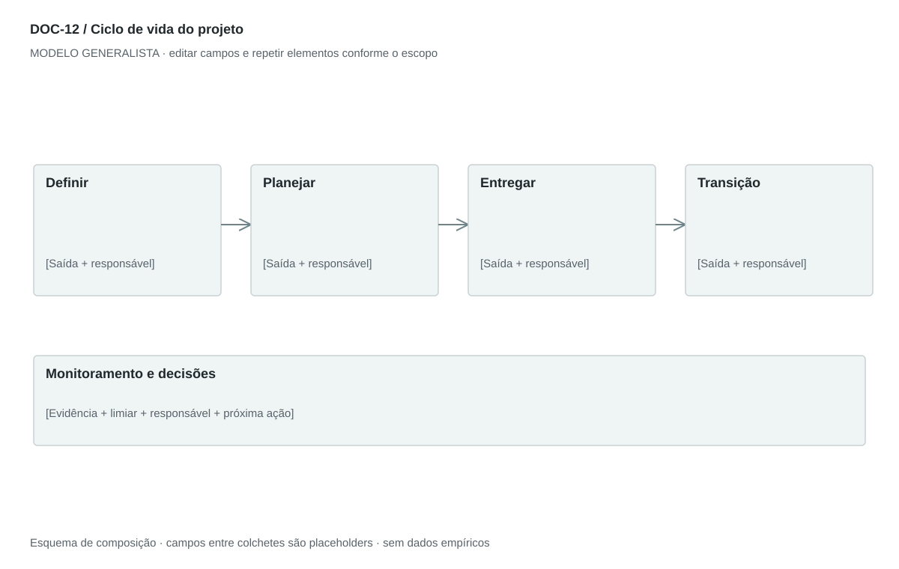

DOC-12 / Biblioteca documental generalista
Ciclo de vida do projeto
Definir fases, atividades, entregas e critérios de passagem até a transição para operação.
Modelo de investigação. Não representa uma análise concluída. Campos vazios devem permanecer identificados; não inventar dados para completar figuras.
Estrutura editorial
2–3 páginas; quadro em paisagem com Fase × Objetivo × Atividades × Entregas × Gate. Monitoramento atravessa as fases aplicáveis.
Visual previsto

Blocos de fase conectados com marcadores de decisão entre eles; uma faixa abaixo representa monitoramento contínuo. Iterações devem aparecer como retorno explícito.
Imagens: Diagrama e quadro de fases; fotografias dispensáveis. Não desenhar porcentagens concluídas sem registro de progresso.
Dicionário de dados
| Campo | Tipo | Dado necessário |
|---|
| fase_id | referencia | Identificador de fase |
| objetivo | texto | Mudança de estado que a fase produz |
| entrada | texto | Condições para começar |
| atividade | texto | Trabalho típico dentro da fase |
| entrega_id | referencia | Resultado verificável de PBS/WBS |
| saida | texto | Condição para concluir |
| aprovador | referencia | Papel que decide a passagem |
| monitoramento | texto | Controle transversal e cadência |
Todos os registros precisam de classificação, fonte, localização, datas, confiança e limitação. Números também precisam de unidade, moeda quando aplicável e período.
Modelo preenchível
Os quadros amarelos podem ser editados nesta página para impressão. Edições não são gravadas automaticamente: use o Markdown/JSON para manter uma versão ou imprima em PDF após editar.
[Negócio] · [Versão] · [Data-base] · [Autor] · [Audiência] · [Território]
Pergunta decisória: [A preencher]
Escopo: [A preencher]
1. Abordagem
Escolha ciclo sequencial, iterativo ou híbrido conforme incerteza e tipo de entrega.
[Análise + evidência + implicação + lacuna]
2. Fases e propósito
Nome, objetivo, entrada e saída de cada fase.
[Análise + evidência + implicação + lacuna]
3. Entregas e aceite
O que demonstra prontidão e quem aceita.
[Análise + evidência + implicação + lacuna]
4. Monitoramento transversal
Riscos, qualidade, custos, mudanças e indicadores durante o trabalho.
[Análise + evidência + implicação + lacuna]
5. Transição e encerramento
Treinamento, documentação, continuidade, lições e aceite da operação.
[Análise + evidência + implicação + lacuna]
Decisão e próximo passo
[Decisão e justificativa]
[Alternativa considerada]
[Condição de reversão]
[Ação, responsável, prazo e critério]
Fontes e limites
[Fonte + localização + datas + o que sustenta + limitações]
Critérios de revisão
- Gates incluem critérios e autoridade.
- Monitoramento não fica isolado como única fase tardia.
- Ciclo não fixa duração sem dados do roadmap.
Estudo do arquivo original
DOC-12-fonte.pdf — Duas páginas em paisagem com grandes tabelas rasterizadas. Coluna esquerda apresenta fase e objetivo; direita agrupa Key Activities e Deliverables, com faixas azuis. Iniciação, planejamento, execução, monitoramento/controle e encerramento. Monitoramento é transversal e não deveria aparentar uma etapa apenas após execução.
Observação do original e adaptação recomendada são camadas distintas. Nomes, preços, localidades, contatos e conclusões do caso-fonte não devem preencher a nova análise.